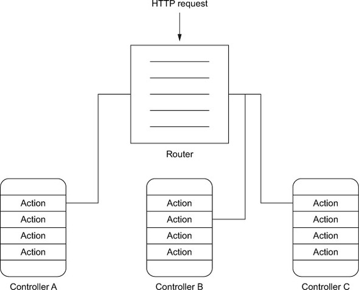

Функционалните програми се състоят в голяма степен от чисти функции без състояние
Как да ги организираме в нашия код?
Чистите функции често рефирират към други конкретни функции.
В някои случаи, особено при работа с конкретен домейн, е доста вероятно да искаме да се абстрахираме от конкретната имплементация на функциите, от които зависим
Във ФП това може да постигнем като функцията се подава като параметър:
Този подход наричаме със сложното име “Dependency injection”
Представлява вид inversion of control – поради това, че функцията вече не създава/реферира изрично конкретна зависимост, ами я приема като параметър
class SomeClass(meaningfulTransformation: (String, Int) => String) {
def function(xs: List[String], n: Int) = {
xs.zipWithIndex.map {
case (x, index) => meaningfulTransformation(x, index % n)
}
}
def anotherFunction = ???
}
val someObject = new SomeClass(ObjectA.anotherFunction)
someObject.function(List("a", "bc", "def"), 11)class SomeClass(meaningfulTransformation: MeaningfulTransformation) {
def function(xs: List[String], n: Int) = {
xs.zipWithIndex.map {
case (x, index) => meaningfulTransformation(x, index % n)
}
}
def anotherFunction = ???
}
val someObject = new SomeClass(ObjectA.anotherFunction)
someObject.function(List("a", "bc", "def"), 11)В някои проекти в индустрията ще срещнете разделение по слоеве – model, repository, service, controller, и т.н. Това почти винаги не работи добре, тъй като една промяна започва да засяга много пакети/модули. Също така компонентите, които имат строга връзка помежду си, остават разделечени и губят своята локалност, което прави кодът по-труден за проследяване.
Разделянето по слоеве не трябва да е основно
src/main/scala отива в appsrc/test/scala в testsrc/main/resources в confproject/plugins.sbt:
build.sbt:
sbt run – стартира се в development режим на http://localhost:9000. При отваряне, ако има нужда, приложението автоматично се рекомпилира и рестартираsbt runProd – стартиране в production режимsbt stage – пакетиране на приложението, така че да може да бъде стартирано самостоятелноОбработва request до HTTP response
Play Framework предоставя по-лесен за употреба DSL за често срещаните обработки
синхронно генериране на резултат от request:
Action(Request[AnyContent] => Response)асинхронно генериране на резултат от request:
Action.async(Request[AnyContent] => Future[Response])парсване на тялото на request-а:
Action(parse.text)(Request[String] => Response)комбинация:
Action.async(parse.text)(Request[String] => Future[Response])
